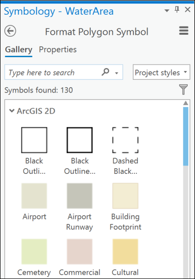
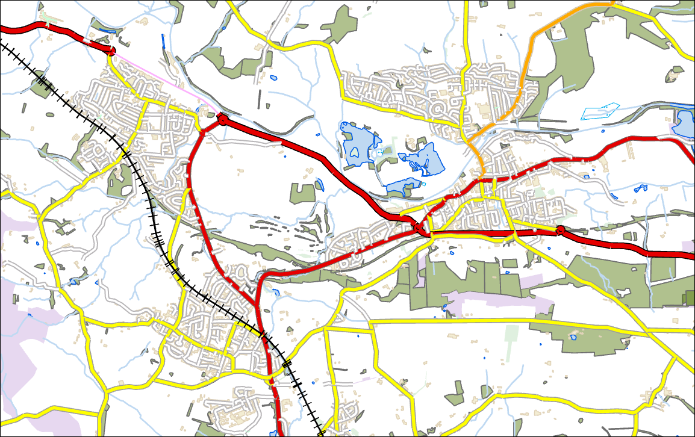
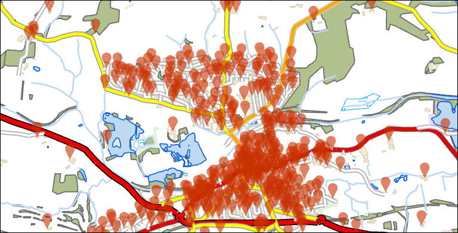
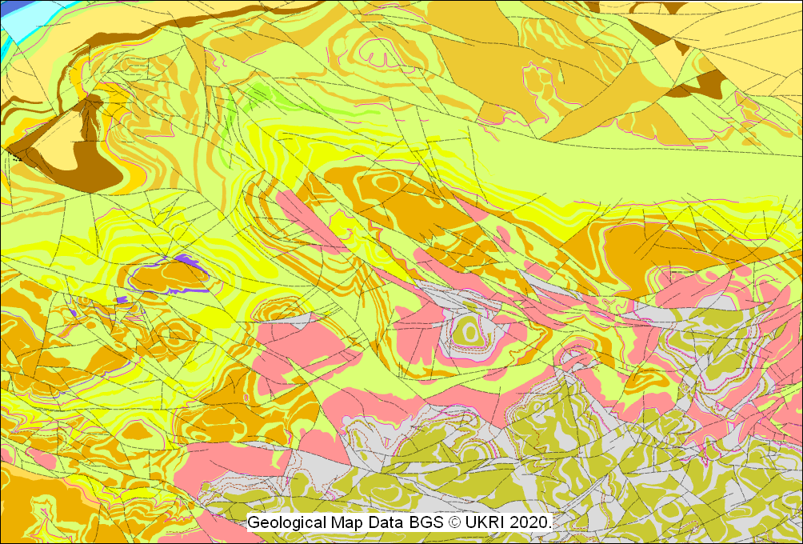
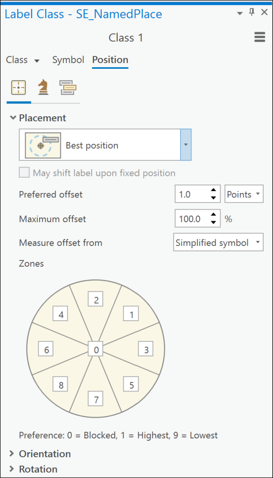

Styling and labelling your data
The background to styling and labelling data in GIS will be covered in the lecture segment at the beginning of the class, and the presentation and any other supporting materials will be available in Minerva. The lecture segment should help you to understand why you are doing these exercises. If you still aren’t sure, please ask Clare.
Learning outcomes
When you have completed this section of the workbook you should be able to
- explain how to symbolise data on a map so that it displays clearly and informatively to your audience
- demonstrate how to add appropriately located labels to the vector features on your map
Introduction
In the previous chapters you have created data and added data from other sources. Now you’ll see how to style, or symbolise, that data and label it appropriately to make a more informative map.
You have symbolised and labelled data in previous chapters, but this chapter brings those techniques together and goes through the options in more detail. It will also introduce some new techniques so that you have a wider range to choose from. You’ll also learn more about styling and labelling geological data when you start to prepare to create a map for your dissertation.
Styling and labelling are subjective processes. Although there are general “rules”, sometimes it comes down to what do you think looks best? Some of the books on the reading list, such as Darkes and Spence (2017) and Brewer (2016), will give you more information about this.
The real thing to remember is to look at your maps and think about your audience. What are you trying to show them and what is the clearest, most effective way of doing that?
Downloading data
The project and data for this section is available to you for download from Minerva
- Go to
SOEE1630 > GIS > Week 5and downloadStyling.zip - Unzip this file to your GIS folder
- You should have a folder called
Stylinggo in to that folder and open the file calledStyling.aprxin ArcGIS Pro
The map includes a VectorMap District Raster background map and Terrain 50 contours. Both layers were downloaded from the Digimap Ordnance Survey collection. You also have some BGS geological data and some other vector layers available to you in the Catalog.
- The geology is 1:50 000 BGS data downloaded from Geology Digimap.
- The other vector layers are mainly VectorMap District Vector layers from OS Digimap, but the water layers are from OpenStreetMap.
We’ll start by symbolising the vector layers to make a background map to replace the raster map, then we’ll move on to add the geology data to the map and symbolise that. Finally we’ll create labels for the data to make the map more informative.
Styling your data
Start by making the layers that you are about to symbolise visible and turning off the other layers so that you can see what you are doing more clearly
- The vector layers are all in a group in the Contents which is called
Vector data. Click the little box next to that subheading to make all the layers visible. - Untick the little box next to
ContoursT50andvmd-raster_3681591.tifto make them invisible - this makes it easier to see what you are doing with the other layers.
Your map should look more like the picture below now.
When you first add a vector feature class to a map, Arc symbolises it with a single, random colour and doesn’t add any automatic information about what the features show. You need to apply styles to your data to differentiate features.
In this section we’ll symbolise the data that you’ve downloaded so that it becomes an informative, but basic map.
The sections below show the general techniques to change colours, line styles, point symbols etc, but you have to decide for yourself how best to symbolise (or style) your data so that your audience can interpret and understand your map.
If you add a key to your map (you’ll be shown how to do this in the Layout chapter), it will show the colours and styles that you have set in this section.
Styling polygon features
We’ll start with polygon features as they are often the simplest to style, then we’ll move on to lines and points.
- In the contents pane select the layer that you want to symbolise, in this case we’ll start with the
WaterArealayer - Go to the
Appearancetab of the ribbon and click onSymbology
The Symbology panel should open on the right and will show the current settings - a single symbol with the colour of the layer as it is now.

Setting a single symbol for a layer
This is the simplest type of symbology and the one that ArcGIS Pro applies to your layers by default.
If you have a layer which contains a single type of feature then you can keep this type and just need to set it to your choice of colour.
Symbolising a layer as a single symbol in Arc
This video clip can be found in the module area of Minerva or in the full list of video clips.
- check that the correct layer is selected at the top of the symbology panel - see the image above - if not click on the correct layer in the contents pane.
- the
Primary symbologytype will already be set toSingle Symbol - to change the symbol click on the coloured symbol next to
Symbol - The pane will usually initially show the
Gallery. Try selecting something from here, for exampleWater (area)- your layer should change to whatever you select.

- To have more control over the symbol click on the
Propertiestab at the top of the pane

- In the Properties dialog try changing the colour of your feature to a different colour, such as a paler blue, e.g.
Sodalite blue, and change the outline colour to a darker shade of the same colour, e.g.Lapis Lazuli, with a narrow width. - This time the colour won’t change automatically on your map. You’ll need to click on
Applyat the bottom of the pane.
All of the water area polygons on your map (lakes, ponds, rivers etc) should now be the same colour and outline.
Symbolising the buildings
The
buildinglayer also needs to be symbolised as a single colour. Try that now for yourself. There is a style calledBuilding Footprintin the Gallery that you could use, or set your own style.
Once you’ve symbolised your water areas and buildings your map should look something like the image below.
Save your map
Don’t forget to save your map at regular intervals. Arc can crash and you don’t want to loose the work you’ve already done.
Setting unique values for a layer
Setting unique values for a layer allows you to categorise your data. For example, if you have a single layer for NaturalFeature and within that you have multiple types of feature, such as ‘water’, ‘heath’, ‘wood’, you can set each type as a category and then symbolise each with a different colour.
This video clip can be found in the module area of Minerva or in the full list of video clips.
If you haven’t already checked the contents of your data then it’s a good idea to do that now so that you know which field you need to use to symbolise it on.
- go to the attribute table of the
NaturalFeaturelayer (right-click on it in the Contents and selectAttribute table)
Which field will you symbolise on?
Have a look at the data in the table. One of the fields (columns) will contain data about the type of natural feature. You may have to look through quite a few columns to find it.
Which field is that? Make a note of the column heading then close the attribute table.
- Check that the correct layer is selected and if the symbology pane isn’t already open, open it now
- To change the Primary Symbology, drop down the box at the top of the pane and change it to
Unique Values

- By default Arc will usually use the first field in your feature class to categorise the data, which is unlikely to be the right one, so change
Field 1to the field you decided above you should use for the unique values - I would suggestnatural.
Arc should automatically set a colour scheme and give a colour to each category. In the case of the layer I’ve given you there are 10 values.
To change the colours and symbols:
- To change the colour scheme for all the colours at once, use the
Color Schemedropdown and pick another - clicking onFormat color schemetakes you to the Color Scheme Editor if you’re not happy with the choices.
To have more control over your symbols you can change them individually
- click on the colour patch for the
woodcategory in the list of classes. - You should go to a familiar dialog - either the Gallery or the Properties.
- Go to the
Propertiesnow and set theColortoSpruce Green. If you hover over the colours in the selectors you are shown a tool tip with the name.
Once you click on Apply your layer should change to your choice of colour.
Note that I’ve chosen green for the woods because in general that’s the colour your audience would expect them to be.
Feel free to carry on and symbolise any of the other categories in a suitable colour.
Choosing colours for polygons
There is a lot of advice in the books on the reading list about choosing colours for maps.
In addition try the Color Brewer web site - it lets you play with colour combinations and is specifically aimed at people making maps.
Note that if you are going to be making a layer transparent then you will probably find that it is best to choose strong colours, such as
Steel Blue, for your polygons. They will fade when you apply transparency.
Removing feature categories that are not required
There are a lot of other feature types available. If you don’t need these for your map it is possible to remove them.
- Use the control key to click on multiple feature categories - in this case click on
water, shingle(water is already symbolised on your map as a separate layer). - then right-click and select
Remove.
Those feature types will be removed from the list and from the key in the Contents pane.
You will notice that they aren’t actually removed from your map, though. Instead of an individual colour any feature which doesn’t belong to a category in your symbology will be coloured with the symbol that appears next to <all other values> in the Contents.
Removing the All other values heading
If you have feature categories that aren’t individually symbolised but show as <all other values>, or if you just want to tidy up your key by removing the All other values heading, do the following
- In the classes pane of the Symbology pane click on
Moreabove the table - Deselect
Show all other values
Controlling transparency with the Color Editor
There are a lot of settings that you can use and you should investigate them for yourself, but one of the most useful is the Color Editor.
If you set transparency for a layer, as you’ve been shown previously, then everything in that layer is transparent - the outlines as well as the fill. Using the Color Editor you can make just the fill transparent.
- Click to edit the symbol for the
woodcategory - Click on the patch next to
Coloras if you were going to change the colour again - then click on
Color properties
You should find that the Color Editor opens.
- There you can alter the
Transparencyusing the lowest of the four colour bars (assumingColor Modelis set toRGB), e.g. set it to40%and see what difference that makes when you clickOK > Apply.
If there is no layer behind this one you may not see much difference, but if there is you should be able to see it now - depending on the order of your layers in the contents you should find that features covered up by the wood polygon now become visible.
Use the instructions above to colour the following categories, using your own choice of colours and setting transparency for the fills
wetland- try looking for theSwampstyle in the gallery
heath- probably a shade of purple for heather
scrub- maybe pale greenFeel free to remove the other categories - there are hardly any features which match those on this particular map.
Remember to save your project at regular intervals.
Styling line features
Symbolising or styling line features is basically the same as symbolising polygon features so refer back to the instructions for those too, but there are some extra things to think about in addition to choosing colours for fill and outline.
As a single symbol
This is very similar to styling polygons
- select the
Waterwaylayer and go to the symbology panel - Leaving the Primary Symbology as
Single Symbolclick on the line symbol next toSymbol - From the Gallery select
Water (line)
You should now have pale blue lines on your map indicating streams and other water courses.
Symbolising dashed lines
You may well need to set dashed lines on a map, for example if you are creating a geological map you may need to add inferred boundaries. The data you are using here is for a railway and in this case we’ll symbolise it as a dashed line.
- Select the
SE_RailwayTracklayer andZoom to Layer- there are only a couple in this area. - Turn off all of the other layers so that you can see what you are doing with this layer
- It can be easier to see what you are doing if you set a reference scale, in this case probably to 1:50 000, and then zoom in.
The simplest way to add a dashed line is as follows:
- Open the symbology pane and check the
SE_RailwayTracklayer is selected - Click on the line symbol next to
Symbol - Go to the Gallery and scroll down to look for
Dashed 4:4and click on it1 - Railways will usually be symbolised as a black line, so if the colour isn’t black change it to that in the Properties now
- Using the gallery will also have changed the line width to
0.4 pt. You can chose your own line width but for now change this to1 ptso that it is more visible. - Click
Apply

You can also set up the dashes manually. This also allows you to edit the style that you’ve set from the gallery if it doesn’t do quite what you want it to.
- Click on the line symbol for the railway again
- In the
Format symboldialog go to thePropertiestab - click on the
Layersbutton - you’ll probably need to use the tooltips to find this - select a colour as
BlackunderAppearanceif you need to - drop down
Dash effectto see the options, and select aDash typefrom the drop down list. - Now you can change the numbers in the
Dash templateto alter the spaces and dashes for your lines - the first number applies to the length of the dash, the second to the spaces - try setting it to2 10and use thetabkey to move out of the box to see what it looks like. Then change it to6 6to see the difference

- When you are happy with the line click on
Apply. There are only a couple of these on the map so you might not see much difference.
Symbolising lines with “decoration”
Some lines need extra symbols to show more information. Decorations on lines can include but are not limited to
- the “ticks” to show downthrow on faults
- little triangles or “barbs” which show thrust faults
- crosses or arrows to show fold axes
For this example we’ll symbolise the SE_RailwayTrack layer with ticks.
The simplest way to apply symbols on lines is to check for existing line styles in the gallery.
- If you check the Gallery there is a symbol for
Railroad- set your railways to that now.
If you can’t find what you want try downloading extra styles from ESRI and see if that helps. You’ll see how to do this in a later section.
If you can’t find the symbol you need then you’ll need to set it up for yourself. We’ll go through this for the railways now.
- Click on the line symbol next to
Symbolin the Primary symbology pane for theSE_RailwayTracklayer - Start by setting the railways back to a single black line with no dashes using the Gallery.
- Open the
Format line symbolpane and go to theProperties - Click on the spanner symbol - if you hover over it you’ll see that it’s
Structure - Click to
Add symbol layer > Marker layer- this adds a symbol on top of your line - To change the symbol click on the
Layersbutton at the top (use tooltips!) and check that theShape markeris selected at the top. - For this example click on the small button next to Form which has 3 coloured shapes on it then select the vertical line - as shown in the picture below. You could also select a symbol from Style or Font instead.
Now you can experiment with the settings until the line looks as you require in the window below.
- make the vertical line width so that it looks the same as the main line - e.g.
1 ptand a bit shorter, e.g.6 pt - try changing the
Marker Placement > Perpendicular offsetuntil the vertical line sits on top of the horizontal line - though for a railway line it will look better if it is centred so move it back again! - Change the colour of both the vertical line and the main line to the same dark grey, e.g.
Grey 80% - To change the spacing of the vertical lines on the line
- drop down the
Marker placementsubheading - change the
Placement templatenumber, e.g. make it5to make the symbols closer (this may look a bit odd and uneven as the railway layer has been digitised as lots of very short features, rather than one long line)
- drop down the
- Once you are happy with your symbol click
Applyand have a look at it on the main map. You may want to make more changes before you are happy with it.
Setting unique values for a layer
Again, this is very similar to symbolising polygons.
- Turn on and select the
SE_Roadlayer in the contents and have a look at the attribute table. - Note the field called
CLASSIFICA- for Classification. This contains information on the type of road and this is the field we’ll use to create the Unique values. - Go to the Symbology pane for the road layer and select
Unique Values - Set
Field 1to theCLASSIFICAfield - you should end up with about 11 values. - Select the line symbol next to
A Roadand go to the Gallery - From the Gallery select the symbol for
Major Road
Remember that these symbols are the symbols usually used on maps in the USA, rather than the OS maps that we’re more used to in Britain. When you apply this to your map you’ll also notice that there are a lot of lines across the roads - we can get rid of those.
- Go to the
Propertiestab of the Symbology pane - Then go to the
Layerstab - remember you can use tooltips to find it
Note that this apparently single line is actually made up of two lines, the lower being thicker than the upper so that it looks as if it is the outline. This is how you can outline an outline!
- Select the top layer - the paler
Solid stroke- Under appearance change the colour of that to
Pointsettia Red - and under
Caps & Joinchange theCap typetoButt
- Under appearance change the colour of that to
- Now select the other layer, which is also a
Solid stroke- Change the colour of that to
Gray 60% - Change the Cap type to
Butt - and change the
Widthto3.2to make the outline appear a bit thinner
- Change the colour of that to
- Click on
Applyto see the effect on your map
Use the instructions above to also symbolise the following categories
Primary Road- try the symbol forHighwayas it’s wider than A roads
B Road- these are usually orange
Minor Road- try yellow for these
Local Street- make these grey outlines around white roadsFeel free to symbolise the other categories too, or just remove them.
Once you have symbolised these lines turn the other layers that you’ve already symbolised back on on your map and save the project.
Set the map to 1:50 000 scale then you should reset the reference scale to 1:50 000 if it isn’t already as this is the scale of the data that you are using.

Styling point features
Again, basic point styling is very similar to styling lines and polygons.
In the project you downloaded look in the Contents under the Vector data group. You should be able to find a feature class called Postcodes.
- If the
Postcodeslayer isn’t already visible, tick in the box next to it so that it appears on your map.
Styling point features as a single symbol
As usual, Arc will have given the layer default symbology when it was added to the map.
- Select the
Postcodeslayer in the contents and open the Symbology panel - Click on the point symbol and from the Gallery select
Tear Pin 1 (40%)- you may need to search or go down the list quite a way to find this.

Styling points as Unique Values
For this part, turn on the SE_FunctionalSite layer in the Contents
- Have a look at the attribute table and make a note of the column that contains the classification
- Use
Unique Valuesfor the symbology and set it so that each type of place has a different colour symbol. Stop All other values from showing.
Your “functional sites” will be symbolised as a series of spots of different colours.
In the same way that you symbolised the polygons and lines click on the points next to the entries in the
Classeslist and try out the options both from the Gallery and the Properties. There are no detailed instructions here because it is so similar to previous sections.
Finding and using additional ArcGIS Pro styles
There are only a relatively limited range of symbols available in ArcGIS Pro when you first install it and sometimes you’ll need more.
ESRI provide further styles via a gallery. Unfortunately it doesn’t seem to be possible to preview the symbols, but there are symbol sets such as Ordnance Survey and Geology 24k which should be helpful.
To install more symbols in your project:
- Download the
Public_Signs_en.stylxstyle from the Gallery by clicking on it in the list (it’s quite a long way down) to go to the individual page, then clicking on theDownloadbutton. You should end up with a.stylxfile - Move or copy the stylx file into your map project folder, e.g.
Styling - Go to the
Inserttab of the ribbon - Click on
Addin theStylesgroup and select toAdd Style - Navigate to where you saved the
.stylxfile and select it. You may get a message about the style not being the correct version, if you do click to allow it to update
Once you’ve done this you won’t get any messages to say it’s done, but you should find that you have a lot more styles available to you in the Gallery.
- Open the symbology panel for the
SE_FunctionalSitelayer - click on the point symbol next to
Air Transport - Go to the Gallery and scroll down to look for the section of
Public_Signs_enstyles - Under that look for
Air Transportationand click on one of the symbols that comes up. You can also use the search box at the top to search forAir
The end result should be a square symbol showing an airplane on a blue background.
You can continue to symbolise the rest of the Functional Site symbols by searching for the appropriate symbol from either the Public Signs symbol set or the ArcGIS 2D set.
Don’t forget to save your work from time to time.
To finish the map
- Turn the
ContoursT50layer back on to provide height data.
Your map should now look something like the picture below.
Styling layers with a layer file
In this section we’ll add geological data from the BGS to our maps and symbolise it using BGS styles.
Have a look in the Catalog for the Styling project. You should find a folder called bgs-50k. This contains BGS geological data downloaded from Digimap.
- Go into the
bgs-50kfolder in the Catalog and then in to theew069folder. - Add the following layers to your map - make sure you add the
.shpfiles and that you add them to the top of the Contents list.ew069_bradford_bedrock.shpew069_bradford_linear.shp
These layers will cover up your existing map and will be given a single, random colour.
When you added the geology layers to your project you may have noticed that in addition to the shapefiles (.shp) there were also files that ended with the extension .lyr but had the same names as the shapefiles.
These are Layer files and can be used to style the data layers which are in the shapefiles.
There are two possible ways to use layer files to symbolise the shapefiles and it is your choice which one you use. Both will give the same final result.
This video clip can be found in the module area of Minerva or in the full list of video clips.
Add the data layer first
You already have the data layers in your map so we’ll start with this method.
- Select the
ew069_bradford_bedrocklayer in the Contents - then click on the
Symbologybutton on theAppearancetab of the ribbon - Click on the menu icon (three horizontal lines) at the top right of the Symbology panel and select
Import symbology...to open the geoprocessing tool
- Your current layer should already be entered under
Input Layer - Click on the folder button next to the
Symbology Layerdrop down and navigate to the location of the layer files. There should be a layer file that matches your shapefile -ew069_bradford_bedrock.lyr - Click on the layer file, then
OK - It’s a good idea to set
Update Symbology Ranges by DatatoUpdate Rangesso that only the symbology you actually need is used. This will make creating a legend much simpler! - Then
Runthe tool.
The data should now be symbolised according to BGS categories as shown below.
Repeat the steps above to symbolise the linear geology layer.

Add the layer file first
- If you already have the bedrock and linear layers in your project turn them off in the contents pane
- Go into the Catalog and this time instead of adding the .shp files to your map add the
.lyrfiles
If it works immediately and you can see a fully symbolised geological map then that’s a bonus and you don’t need to repair the data source.
If, however, you get the dreaded red exclamation marks next to your layers in the contents and nothing new on the map then you need to tell the layer file where to find the data on your computer. It doesn’t mean you’ve done anything wrong, you just need to know how to solve it by repairing the broken file links as shown in the previous chapter.
Making the layer transparent
Once you’ve applied the layer file to your shapefile you can see the geology, but it isn’t transparent so you can’t see the base map through it. Your audience need to be able to identify where the geology is.
To allow the base map to show through you need to make the bedrock layer transparent, following the instructions you were given in the first chapter.
You may find that your map looks better if you turn off the Vector data group which contains the layers you styled in the previous sections, and instead turn on the vmd-raster_3681591.tif background layer.
Your final map should look something like the map below when you zoom in.
Save this map - you’ll be using it again in the section below on labelling your data.
Labelling your data
If you look at any map you’ll be able to see that attributes from the attribute table have been used to add labels. Labels on your data are essential to the understanding of the map.
When you have information in your attribute tables it is really easy to add labels to your features. You may not need to add them to all layers, but they can really help interpretation. For example, if you look at British Geological Survey maps they add symbols or letters to each rock polygon which are then included in the key and make it easier to spot which symbol is which. Points can be labelled to show location names, or dip angle and names can be added to lines, such as “Moine Thrust” on the appropriate thrust fault.
Adding simple labels
You should have a bedrock geology layer in your FindingData map which you symbolised with the BGS layer styles. You’ll use that to try out labelling polygons by adding a code for each rock formation.
This video clip can be found in the module area of Minerva or in the full list of video clips.
- Select the
ew069_bradford_bedrocklayer in the Contents - Start by looking at the attribute table. You need a short abbreviation with which to label each bedrock polygon on your map. Which attribute contains a short abbreviation for the rock formation name?
- With the correct layer selected click on the
Labelingtab of the ribbon
- Click on the
Labelbutton on the far left of the ribbon
Arc will add labels to your map but they will be from the first field in your feature class, which is unlikely to be the correct one and could be a load of apparently random numbers!
To select the correct field:
- Use the dropdown next to
Fieldon the left of the ribbon to select the field that contains the labels you wish to use - in this case I suggest you use theLEXfield.
You should find that the labels from the field you’ve chosen appear on your map - be patient it can take Arc a while to draw them.
Once you have the basic labels you can use the other tools on the Labeling ribbon to change the font, size, colour or placement.
Try changing the font of your labels and making them smaller or larger. Change the colour to a dark grey instead of black.
You can try out various fonts for your labels, but note that the final one you choose should be something which is clear for your audience to read. Also note that while your labels should be big enough to be read, they don’t need to be large unless they are really important.
Alternatively you can use the Label Class panel.
- on the Labelling ribbon click on the small downwards arrow at the lower right of either the Text Symbol or the Label Placement group.
Try out some of the options on the
SymbolandPositiontabs to see what they do.Try adding a Halo or Shadow to your labels. Does it make them clearer?
It’s usually best to keep label styles simple - you’re aiming for readability not fancy - but a narrow halo or a callout can be useful techniques for making labels clearer if used in moderation.
Label placement
The most complex part of labelling is ensuring that the labels are in the best place with regard to the feature they apply to, without getting in the way of other labels.
Placing labels for points
The placement of labels for polygons can be relatively straightforward, though it’s a good idea to experiment, but placing points can be more complex.
- Make sure that you have the
SE_NamedPlacelayer on your map and that it is visible. If you’ve turned of the vector layers you’ll need to drag and drop it out of theVector datalayer so that you can see it. - Make the other layers invisible
- Turn labels on for the Place layer by clicking the
Labelbutton on the far left of the Labeling ribbon and selectDISTNAMEin the field dropdown as the label content.
- You’ll probably need to start by making the font smaller, e.g.
6, as there are a lot of names on this map - Look at the
Positiontab and thePlacementoptions in the Label Class dialog

The dialog is automatically set to Best position - you can see above that most of the labels are placed at top right, but if they are likely to overlap other labels then they are moved according to the preference in the zones shown on the dialog.
The simplest way to change placement is to use the drop down at the top of the dialog. Change that now to one of the other settings, e.g. Top of point. You should see all of your labels jump to that location.
Sometimes the point marks where the label should actually occur.
- Set the Placement to
Centered on point - This will look odd because you can still see the point, but it’s underneath the labels.
- to prevent that you need to symbolise the points so that the fill and outline have
No color
These are all settings that you can play with to make your map as clear as possible.
Placing labels for lines
Labelling lines creates another set of challenges. Do you need your labels above the line, or on top of it? Does it need to follow the line exactly or can it be straight?
- Turn off the
SE_NamedPlacelayer and turn onSE_Road - Have a look at the attribute table for the
SE_Roadlayer. You should be able to see that theDISTNAMEcolumn contains street names. - Zoom in to about 1:20 000 on an area of the map which has quite a lot of roads, so that the roads look quite wide.
- Now go to the Labeling tab of the ribbon and select to label the road layer with the
DISTNAMEfield. - Set the font size to
3by typing in the box
If you think about the road maps you are used to, the name of the street is usually on top of the street it applies to, so we’ll set that now.
- In the
Label Placementgroup of the ribbon scroll down the selection box until you findEuropean Streetsand click on that
You may need to wait a short while for your labels to move but they should now appear within the lines of the road symbol and should be curved to follow the roads where appropriate.
Now go to the Position tab of the Label Class dialog. You’ll see that there are a different set of options to the dialog for the points feature class.
- Now make the
Waterwaylayer visible. - This time the
namefield contains the data we want to use to label the waterways. - Your Waterway layer should already be symbolised as a single symbol and a blue line.
- Now go to the Labeling tab of the ribbon and select to label the
Waterwaylayer with thenamefield and set the font size to5. You may have to pan and zoom around the map to find labelled waterways. - Waterways are often labelled on maps in the same blue as the features, so on the ribbon set the colour to
Yogo Blue - In the
Label Placementgroup of the ribbon scroll down the selection box until you findEuropean Streetsand click on that
This time you should find that the labels are either above or below the line, but not right on it, and are again curved to match the line.
Now go to the Position tab of the Label Class dialog and have a look at the settings - this time the labels are Offset curved. Try changing some of the settings to see how it affects your labels.
Using label classes
Label classes refer to the ability to add labels to a subset of features in your feature class, or different labels for different features.
Note that you’ll need to be patient while your map refreshes after each step. Labelling the map is processor intensive and can take a while.
In this case it would be good to be able to set the SE_NamePlace layer so that different categories of named place have different label styles.
This video clip can be found in the module area of Minerva or in the full list of video clips.
- Have a look at the attribute table for the
SE_NamedPlacelayer, in particular theCLASSIFICAcolumn.
You should see a range of classifications which include Populated Place - we’ll set this as a class and label just the populated places.
- On the Labeling ribbon look in the
Label Classgroup. This is where you set the Field name to label all of the features. - The
Classfield should sayClass 1at the moment- Untick the box next to
Label Features In This Class- your labels should disappear.
- Untick the box next to
- Drop down the
Classchoices and selectCreate new label class - Put a class name, such as
Populated Placein the dialog that pops up and clickOK
You’ll probably find that Arc adds back in all of the Name Place labels without the formatting that you’ve already done. At this stage you need to tell Arc that you only want to label certain features.
- Click on the SQL2 button to the right of the Class drop down - see image below

This brings up the Label Class pane to the right of the map window.
- In the Label Class pane click on the button for
New expression - Use the dropdown boxes that appear to select the statement
Where CLASSIFICA is equal to Populated Place
- Then click
Apply
The number of labels on your map should immediately decrease and now all you need to do is style the labels so that they look better
- decrease the size of the font so that the labels don’t dominate your map - remember that the labels need to be visible, but not too large.
- change the label position so that it looks good to you
- maybe change the colour to something less “stark” than black, e.g. Grey 80%
- Sometimes applying a
halocan help a label to stand out against a background- go to the Symbol tab of the Label pane and drop down the
Halosubheading - set the
Halo symbolto white - choose a
Halo size- it’s usually best to keep this narrow, e.g. max of 1 pt, but 0.4 pt can be very effective without being too obvious. - Check the symbol in the pane below then click
Applywhen you are happy with it
- go to the Symbol tab of the Label pane and drop down the
Converting labels to annotation
Now we’ll finish building up the 1:50 000 geological map.
- Turn the geological layers back on and have a look at your map
The first thing you may notice is that the place and contour labels “float above” the bedrock geology polygons. Particularly with halos set this looks a bit odd and in this case the labels only need to be in the background.
The best way of dealing with this is to convert the labels to annotation.
Before you convert your labels to annotation make sure that they are as you want them to look. Once you have converted them it will be harder to make changes.
This video clip can be found in the module area of Minerva or in the full list of video clips.
- Select the
SE_NamedPlacelayer in the Contents and right-click Convert Labels > Convert Labels to Annotation
This will open the Geoprocessing pane to the right of your map.
- Check that the
Conversion Scaleis the scale you will be printing your map - in this case1:50,000 - Check that the
Feature Layeris correct - Select the
Output Geodatabaseas your project geodatabase (i.e. the same one that the original layer is stored in) - Drop down the
Extentfield and selectDefault - Then click to
Run
Once you’ve run the tool a new group should appear in your contents. In this case mine is called GroupAnno and inside it is a layer called SE_NamedPlaceAnno - the same name as the original layer with Anno on the end.
- You can now drag and drop this group further down the Contents list so that it appears below the bedrock layer
Once you’ve done that you should be able to see that the Populated place labels are now in the background of the geological map.
To finish the map also convert the labels for the following layers to annotation and move those down the contents list. You’ll need to change the name of the
Output Layereach time or you’ll overwrite your existing annotations.SE_Road
Waterway
ContoursT50
When Arc creates annotations it automatically turns off the automatic labelling on the layers. If you need to bring this back all you need to do is go back to the Labeling ribbon and click the Label button on the left again.
Final map
Once you’ve finished your map
- set the scale to 1:50 000
- set the background map as the
Vector datagroup and turn off thevmd-raster_3681591layer - I want to be able to give feedback on your work, not the work of the Ordnance Survey! - go to the
Sharetab of the ribbon and select to ExportMap - Export as either
PNGorPDFand upload the map to your individual area of the Class Notebook as a record of what you have done.
If you upload your map during the week after the class you will get brief feedback on what you have done.
Your map could look something like the map below - hopefully rather better! We won’t worry about setting up a full layout at the moment as that is covered in another chapter.
Recommended reading: Styling and labelling your maps
For more information have a look at the Layout and Presentation section of the module GIS reading list.
For a quick guide go for Darkes and Spence (2017). The section on “Symbolisation” on pages 17-18, and “Text on maps” on pages 23-25 are particularly relevant.
Remember the first edition of Darkes and Spence is available for download from the British Cartographic Society webpages.
More information
If you want to make some fun maps whilst learning more about symbology and labelling try the videos by John Nelson from ESRI.
Examples include illuminated labels, a pen and ink stipple effect and adding scientific colour schemes to your projects.
-
If you don’t find the dashed lines then the styles may not be installed for you. Instructions for adding additional ArcGIS Pro Styles are in a separate section. ↩
-
SQL stands for
Structured Query Languageand is a common way of querying databases. Luckily dialogs in Arc make it relatively simple to use where you need it. ↩